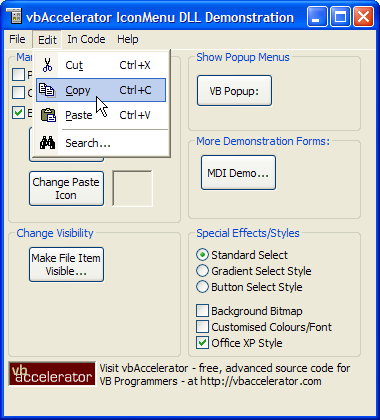

VB5 Icon Menu DLL Demonstration (61K)
VB5 Icon Menu DLL Demonstration (61K)
 VB5 Icon Menu DLL Full Source (106K)
VB5 Icon Menu DLL Full Source (106K)
 VB5 IconMenu DLL Binary (20K)
VB5 IconMenu DLL Binary (20K)
 VB6 IconMenu DLL Binary (21K)
VB6 IconMenu DLL Binary (21K)
 VB6 IconMenu DLL Demonstration (58K)
VB6 IconMenu DLL Demonstration (58K)
 VB6 IconMenu DLL Full Source (101K)
VB6 IconMenu DLL Full Source (101K)
 28 Mar 2003
28 Mar 2003
Added Office XP Menu style
Added VB6 ImageList Compatibility for XP, and fixed bug with disabling of icons for MS Image Lists.
Tidied sample code up.
 PopupMenu DLL - Create Unlimited Popup Menus
PopupMenu DLL - Create Unlimited Popup Menus
 vbAccelerator NeoCaption Component v2.0
vbAccelerator NeoCaption Component v2.0
 Subclassing Without The Crashes
Subclassing Without The Crashes
 vbAccelerator ImageList Control and Class v2.0
vbAccelerator ImageList Control and Class v2.0

vbAccelerator IconMenu DLL
The simplest way to get icons into VB menus. 100% support for VB's menuing features - add icons to any VB menu fast!
There are various controls for drawing menus with icons in at this site (and some code for doing the same sort of thing elsewhere). But so far these objects and code have been quite difficult to implement. This happens because these objects provide support for creating arbitrary menus at runtime - something VB has never been able to do. The downside to this extra functionality is that these menu controls must implement their own structures to hold the menu information.
This object is introduced for one reason: to make it possible to add icons to any type of VB project with almost no coding at all - and at the same time to ensure 100% compatiblity with VB's menuing features, including the Visible and WindowList properties.
What's Here, What's Not
This DLL might be easy to use, but it doesn't leave out features. You get the ability to add an icon to any menu item, to customise the colours and fonts shown in the menu, to set a background bitmap to appear tiled into the menu background and to set the highlight mode to either standard, gradient or button style. For the latest UI look, separators also draw in the Office 2000 style.
What you can't have with this release is the ability to create arbitrary menus at runtime. You can use VB's Load and Unload to increase the size of a menu array, but that does not allow you to create new menu levels that weren't there at design time. Another restriction is that when setting icons for menu items, you must key the icon against the menu item's caption property - and that means that if the caption changes, you must also change the menu item/icon association too.
In Use
Using this object is very simple. There are only four methods and properties which are used:
- Attach
Starts the Icon Menu processing for the form with the hWnd passed in as the first parameter. - ImageList
Sets an ImageList to draw icons from. - IconIndex
Associates the zero-based index of the image within the ImageList with any menu item having the caption passed in as the second parameter. - IconItemCaptionChanged
If you change the caption of an item with an icon, you can inform the component of the change using this method. The component responds by changing its associate to reflect the new caption.
And really, that's all you need to know to make the object work!
Further properties are provided in the control primarily to allow you to change the appearance of your menus:
- Colours
MenuBackgroundColor, ActiveMenuForeColor and InActiveMenuForeColor can all be changed to any colour you want, or set them to -1 for the default behaviour. - Font
You can set the Font for the menu to any font you wish, or set this property to Nothing to get the default Menu font. - BackgroundPicture
Set this property to a StdPicture object and VB will tile it into the background of all the menus. Setting it to Nothing removes the picture. - Highlight Styles
The menu highlight style can be set to Standard, Gradient or Button using the HighlightStyle property. - OfficeXPStyle
Setting this flag causes the menu to render with the cooler new Office XP/VS.NET style.
I've found this component a really simple way to add icon menus to my projects. Hope it helps in yours.